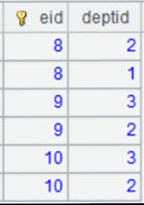

Description:
Define a record filtering operation on a pseudo table and return a new pseudo table.
Syntax:
T.select(x)
Note:
The function defines a computation on pseudo table T, which will calculate expression x on each of its records and get records that make x true, and return a new pseudo table.
It returns a pseudo table retaining all records when parameter x is absent.
Only supported by esProc Enterprise Edition.
Parameter:
|
T |
A pseudo table. |
|
x |
A Boolean expression that is a filter condition, which can be null. |
Return value:
Pseudo table object
Example:
|
|
A |
|
|
1 |
=create(file).record(["D:/file/pseudo/app.ctx"]) |
Below is data in composite table app.ctx:
|
|
2 |
=pseudo(A1)
|
Generate a pseudo table object. |
|
3 |
=A2.select(eid>7) |
Define a computation on A2¡¯s pseudo table, which will get records that satisfy eid>7, and return a new pseudo table. |
|
4 |
=A3.import() |
Import data from A3¡¯s pseudo table while executing the computation defined in A3 on A2¡¯s pseudo table, and return the following table:  |
|
5 |
=A2.select() |
Define a computation on A2¡¯s pseudo table, which will get all records, and return a new pseudo table. |
|
6 |
=A5.import() |
Import data from A5¡¯s pseudo table while executing the computation defined in A5 on A2¡¯s pseudo table, and return the following table:
|